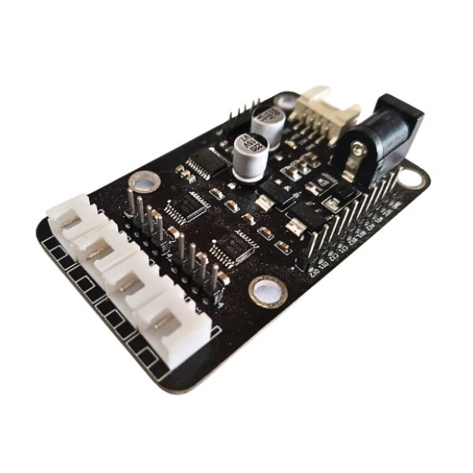
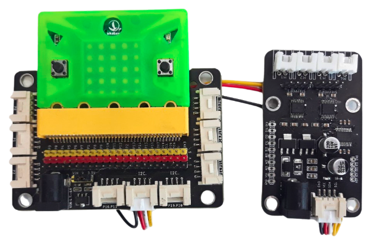
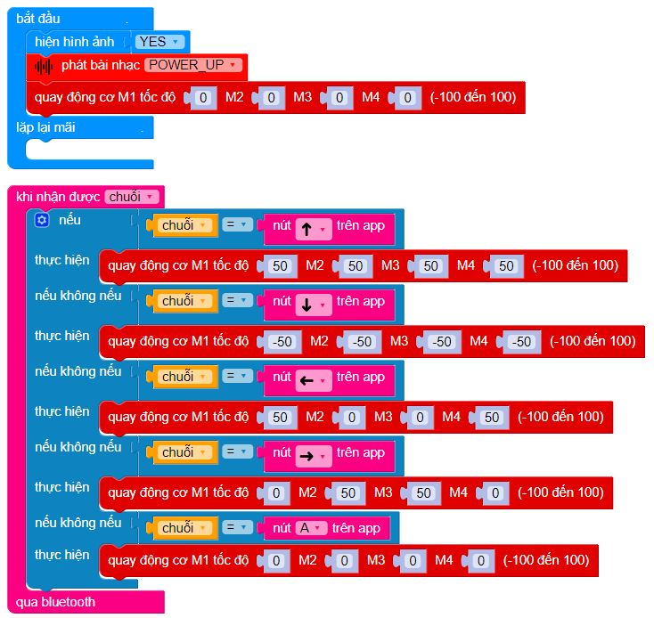

6. Module điều khiển động cơ
{kind=link}
Sản phẩm được sử dụng để điều khiển chuyển động của các thiết bị điện như động cơ DC giảm tốc hoặc động cơ servo. Mạch này cho phép kiểm soát hướng quay và độ mạnh yếu của động cơ, tính năng này sẽ bảo vệ sự an toàn cho vi điều khiển của bạn không bị chập nguồn.
1. Mua sản phẩm

2. Thông số kỹ thuật
Kích thước 48x60mm, chuẩn 4 dây tín hiệu
Giao tiếp: I2C
Cùng một lúc có thể điều khiển được 4 động cơ DC hoặc 2 động cơ bước
Điện áp 5-12V 2A (Được cấp thông qua Jack DC cái)
3. Kết nối
Kết nối module điều khiển động cơ với Yolo:Bit thông qua cổng I2C trên mạch mở rộng.
{kind=link}
4. Hướng dẫn lập trình với OhStem App
4.1. Tải thư viện
Để điều khiển được module, chúng ta phải cần thêm thư viện mở rộng MOTORS DRIVER, bạn hãy copy đường dẫn sau: https://github.com/AITT-VN/yolobit_extension_motor_driver.git và dán vào mục mở rộng để tải thư viện mở rộng.
{kind=link}
{kind=link}
Note
Với các lệnh cơ bản này, bạn có thể xây dựng 1 mô hình robot 4 bánh xe hoặc các mô hình khác theo ý thích. Module hỗ trợ cả 2 loại động cơ bước và động cơ 1 chiều (DC), tuy nhiên khi sử dụng, chúng ta chỉ được phép sử dụng 1 trong 2 loại cùng lúc.
4.2 Viết chương trình
Dự án mẫu: Robot Mecanum 4 bánh sử dụng module điều khiển động cơ:
{kind=link}
Với các cổng gắn động cơ như sau:
Bánh trước bên phải : cổng M1
Bánh trước bên trái : cổng M2
Bánh sau bên trái: cổng M3
Bánh sau bên phải: cổng M4
Gửi chương trình sau vào Yolo:Bit:
{kind=link}
Sau đó, vào giao diện điều khiển của gamepad Yolo:Bit, kết nối Bluetooth và bắt đầu điều khiển robot:
{kind=link}
Chương trình mẫu: Bạn có thể tải chương trình tại đây.
5. Hướng dẫn lập trình với Arduino
Mở phần mềm Arduino IDE. Xem hướng dẫn lập trình với Arduino tại đây.
Copy đoạn code sau, click vào nút
Verifyđể kiểm tra lỗi chương trình. Sau khi biên dịch không báo lỗi, bạn có thể nạp đoạn code vào board.
Note
Khi bạn tải phần mềm Open Scratch Link, thư viện điều khiển động cơ đã được thêm vào máy tính của bạn với tên “Motor Driver”. Bạn lưu ý cần phải cấp nguồn để động cơ quay và chỉ được cấp vào jack DC cái trên mạch.
Bên cạnh đó, chỉ dùng 1 trong 2 loại động cơ trong lúc điều khiển, không thể điều khiển 1 lúc 2 loại động cơ (DC , Stepper)
5.1 Chương trình điều khiển động cơ DC
#include "MotorDriver.h"
uint8_t speed = 0;
DCMotor motor;
void setup()
{
// Set all motor stop
motor.setSpeed(0, FORWARD, speed);
}
void loop()
{
// Set all motor stop
motor.setSpeed(0, FORWARD, speed);
speed = (speed + 10) % 100;
delay(5000);
}
5.2 Chương trình điều khiển động cơ bước
#include "MotorDriver.h"
uint8_t speed = 0;
StepperMotor motor;
void setup()
{
// Set all motor stop
}
void loop()
{
// Set all motor stop
motor.setSpeed(0, FORWARD, speed);
speed = (speed + 10) % 100;
delay(5000);
}
Note
Ngoài ra động cơ bước còn hỗ trợ cả hàm:
motor.step(motor_index, MotorDirection, step) hàm quay với số bước theo chiều xác định với 3 tham số là cổng động cơ, chiều quay, số bước);
motor.onestep( motor_index, MotorDirection) hàm quay 1 bước theo chiều xác định
motor.release(motor_index) hàm để tắt điều khiển servo